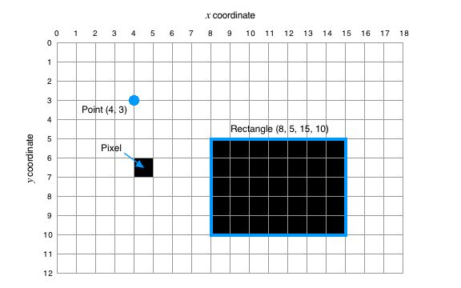

Coordinates, Points and Rectangles
The coordinate system of a Window or View has (0, 0) at the top left corner,
with x coordinates increasing to the right and y coordinates
increasing downward. The coordinates label infinitely thin horizontal and
vertical lines, and pixels exist between these lines, as illustrated in the
figure below.
A point is represented by a 2-tuple (x, y). A 2-tuple can also
be used to represent as size (width, height) or a relative displacement
(dx, dy).
A rectangle is represented by a 4-tuple (left, top, right, bottom).
If right <= left or bottom <= top, the
rectangle is an empty rectangle and is considered to enclose no pixels.
Angles are measured in degrees anticlockwise from the x-axis.
The Geometry submodule provides a collection
of functions for operating on points and rectangles.

Relationship between coordinates,
pixels, points and rectangles